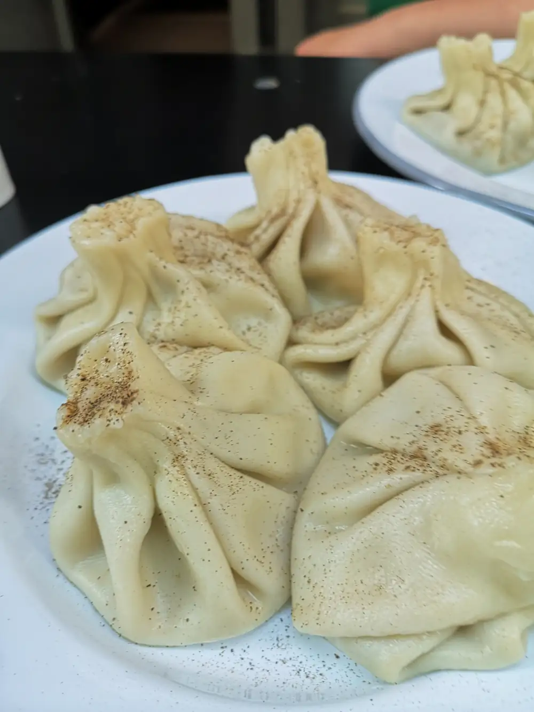
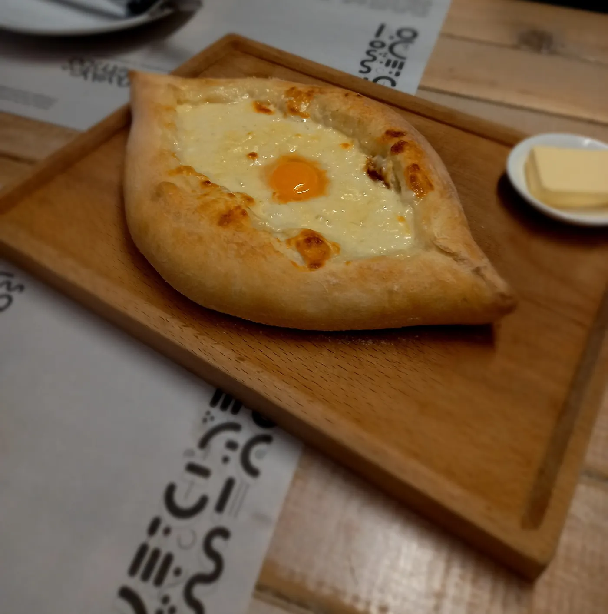
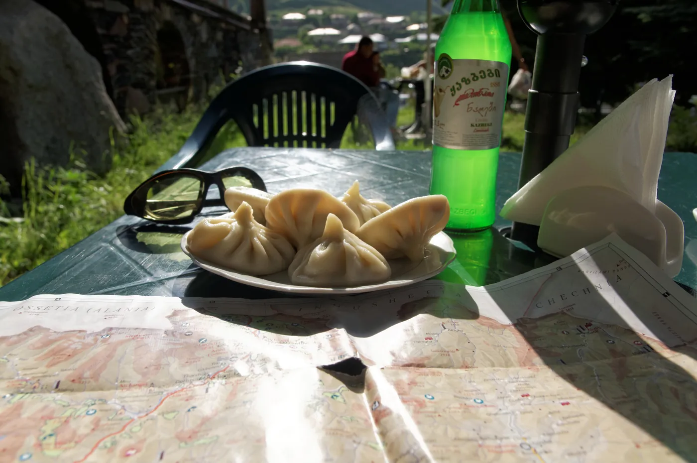
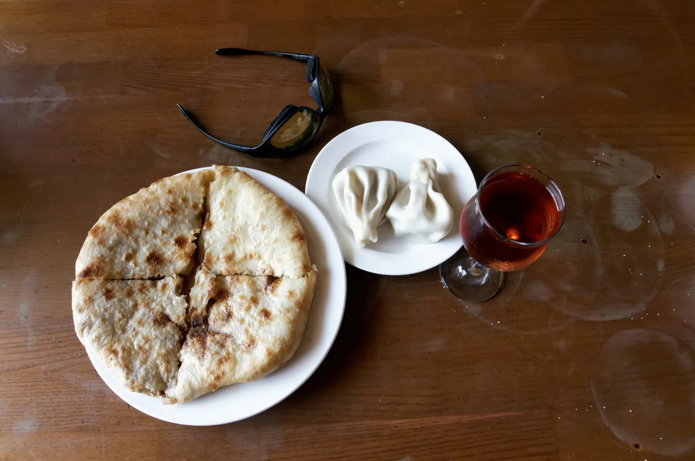

Casa 22
La cocina que aún no conoces está en Sant Andreu.Khinkali georgianos hechos a mano junto a platos españoles de temporada. Vermut de barril al mediodía. Una carta que te lleva de Tbilisi a la mesa de tu abuela sin salir del barrio. No hay otro igual en Barcelona.

¿Qué es la cocina
georgiana?
Georgia lleva miles de años en la encrucijada entre Europa y Asia. Su cocina no se parece a nada: es densa, aromática, comunal. En Casa 22 la traemos a Sant Andreu sin perder lo nuestro de aquí.
Khinkali — los dumplings del Cáucaso
Son bolsas de masa rellenas de carne especiada, caldo y hierbas. Se comen a mano, mordiéndolas por debajo para sorber el caldo antes de comérselas enteras. Tienen miles de años de historia y son el plato más icónico de Georgia. En Casa 22 los preparamos con receta artesanal, sin atajos.
masa a mano · caldo interior · especias del CáucasoKhachapuri — el pan relleno con queso y huevo
Una embarcación de masa horneada rellena de queso fundido y un huevo que se rompe en el momento. El resultado es cremoso, contundente, difícil de describir sin haberlo probado. En Georgia se come en el desayuno, en la cena, en cualquier momento. Aquí lo ofrecemos como entrante o plato principal.
masa horneada · queso fundido · huevo frescoLa fusión española — lo que hace único a Casa 22
A los platos georgianos se suma una carta de cocina española de mercado: pescado fresco emplatado con cuidado, mejillones a la marinera, atún sellado con guisantes, salmón con brócoli. Y el vermut de barril al mediodía, que es una costumbre que aquí nadie toca. Es la mezcla que define el carácter del local.
temporada · mercado · vermut de barril
Una carta honesta.
Sin florituras.
Casa 22 no es un restaurante de lujo ni un concepto. Es un sitio de barrio con una propuesta culinaria que te hace preguntas: ¿Qué es eso? ¿Cómo se come? ¿Por qué no lo había probado antes? Eso es lo que hace memorable una comida.
El dueño combina dos culturas gastronómicas con 240 seguidores en Instagram y cero presencia digital. La cocina ya está; lo que falta es que la gente la encuentre.
Una carta que
no esperas.
Georgia en el entrante, España en el principal, vermut en el aperitivo. No hay otro restaurante con esta combinación en el barrio. Ni en muchos sitios de Barcelona.

Khinkali artesanales
Los dumplings del Cáucaso. Masa fina, caldo caliente, carne especiada con hierbas. Se comen de un bocado, se disfrutan en grupo. El plato que más sorprende a quien los prueba por primera vez.
Atún sellado
Atún sellado con guisantes
Lomo de atún a la plancha, sellado al punto, acompañado de guisantes frescos y su salsa. El producto español de temporada como protagonista, sin trampa. Emplatado con cuidado.
Vermut de barril
Vermut de barril
El vermut de grifo, servido del barril, es una institución en Casa 22. Los domingos al mediodía el local se llena de gente del barrio que viene solo por eso. Una costumbre que en Sant Andreu se cuida.
Mejillones
Mejillones en salsa cremosa
Mejillones frescos cocinados con una salsa blanca de la casa, densa y sabrosa. De los platos que se terminan rebañando. Evidencia de que la cocina española tradicional tiene su peso en la carta.

La mesa georgiana
Khachapuri y khinkali juntos, con vino georgiano o cerveza fría. Así es como se come en Georgia: compartiendo, sin prisas, con la mesa llena. Casa 22 puede montar esta experiencia para grupos que quieran conocer la cocina caucásica.
Salmón
Salmón con brócoli
Lomo de salmón cocinado al punto con brócoli al vapor y una reducción. La parte más clásica de la carta española: producto fresco, emplatado limpio, sin complicaciones innecesarias. Tan bueno como lo que hay antes.
Georgia en
cada plato.
"Khinkali del Cáucaso, vermut de barril del barrio. Dos culturas en la misma mesa."
El restaurante que te enseña que la cocina georgiana existe, que es buena, y que combina perfectamente con una copa de vermut un domingo al sol. Si no lo has probado, es que no has estado en Casa 22.
En el corazón de
Sant Andreu.
Carrer d'Otger 22
08030 Sant Andreu, Barcelona
- LunesCerrado
- Martes13:00 – 16:00 · 20:00 – 23:00
- Miércoles13:00 – 16:00 · 20:00 – 23:00
- Jueves13:00 – 16:00 · 20:00 – 23:00
- Viernes13:00 – 16:00 · 20:00 – 23:30
- Sábado12:00 – 16:30 · 20:00 – 23:30
- Domingo12:00 – 16:30 · Vermut hasta 15:30
Por teléfono o reservando aquí mismo. Los fines de semana se llena — mejor reservar con antelación.
Lo que suelen
preguntar.
¿Qué son exactamente los khinkali?
Los khinkali son dumplings georgianos: bolsas de masa rellenas de carne picada especiada con cilantro, perejil y caldo. Al cocerse, el caldo queda atrapado dentro de la masa. La forma de comerlos es a mano: se sujetan por el nudo de arriba, se muerde la base, se sorbe el caldo caliente y luego se come el resto. El nudo se deja en el plato. Es uno de los rituales más reconocibles de la gastronomía georgiana y lleva siglos sin cambiar.
¿Es la cocina georgiana muy diferente a lo que estoy acostumbrado?
Es diferente en el mejor sentido. Georgia tiene una gastronomía milenaria que combina especias del Mediterráneo, técnicas del Medio Oriente y productos del Cáucaso. Los sabores son intensos pero equilibrados, los platos son generosos y están pensados para compartir. La primera vez que pruebas los khinkali o el khachapuri suele ser una sorpresa positiva. En Casa 22, además, está combinada con platos españoles de temporada, así que siempre hay algo familiar en la carta.
¿El vermut de barril es todos los días?
El vermut de barril se sirve principalmente los fines de semana al mediodía, cuando el local tiene su ambiente más de barrio. Los sábados y domingos entre las 12:00 y las 15:30 es el momento en que más gente de Sant Andreu se acerca a Casa 22. Si vienes entre semana, lo mejor es llamar antes para confirmar que está disponible ese día. Para grupos que quieran un aperitivo de vermut como parte de una comida, también se puede coordinar con reserva previa.
¿Es necesario reservar o se puede ir sin reserva?
Se puede entrar sin reserva, pero los viernes y sábados por la noche, y los domingos al mediodía, el local se llena. La recomendación es reservar si venís más de dos personas o si tenéis un horario fijo. Para grupos de más de cuatro es imprescindible avisar con antelación para aseguraros la mesa y para que la cocina pueda preparar bien el servicio. Podéis reservar directamente desde esta web o llamando al 640 97 11 07.
¿Hay opciones para personas que no comen carne?
La carta de Casa 22 incluye platos de pescado y algunas opciones sin carne, como el khachapuri (que lleva queso y huevo pero no carne) y los platos de pescado de temporada: salmón, atún y mejillones. Los khinkali clásicos llevan carne, pero conviene preguntar si ese día hay alguna variante disponible. Para personas con alergias o intolerancias concretas, lo mejor es indicarlo en la reserva para que cocina pueda informaros con detalle.
¿Dónde está exactamente el restaurante en Sant Andreu?
Casa 22 está en el Carrer d'Otger 22, en pleno Sant Andreu de Palomar, uno de los barrios más auténticos de Barcelona. Se llega fácilmente en metro (L1, parada Sant Andreu o Fabra i Puig) o en autobús. Es un barrio tranquilo, con mucha vida de proximidad y poco turismo de paso, lo que le da al local un carácter de restaurante de barrio real, no de sitio para turistas. El trato es directo y cercano.